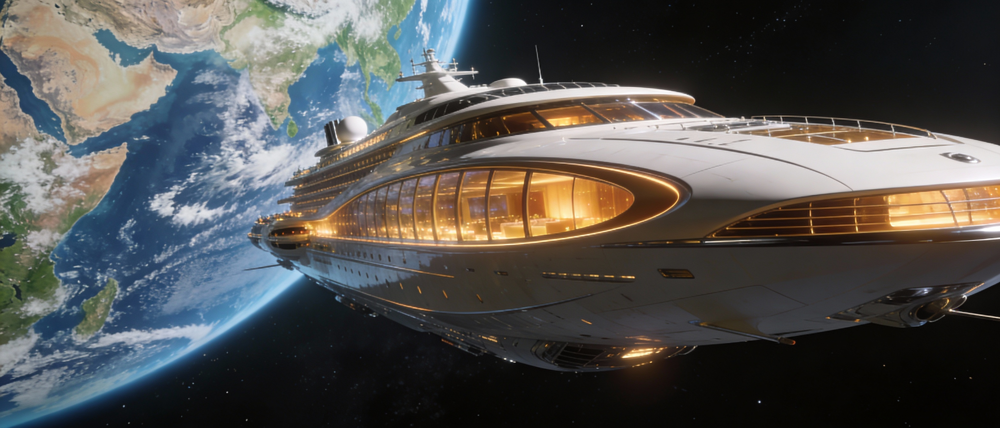
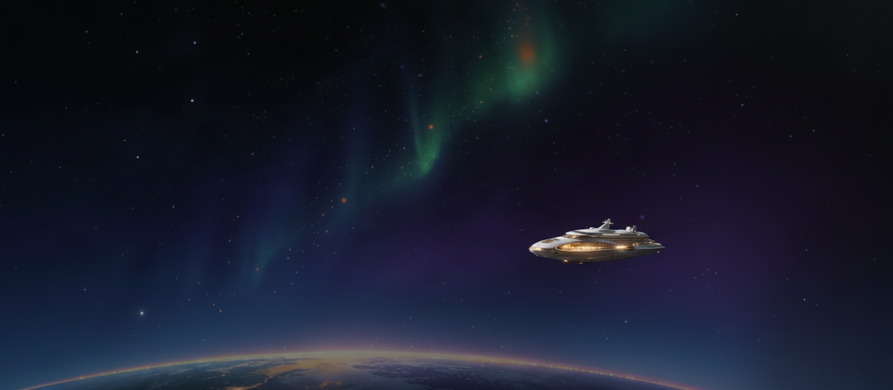
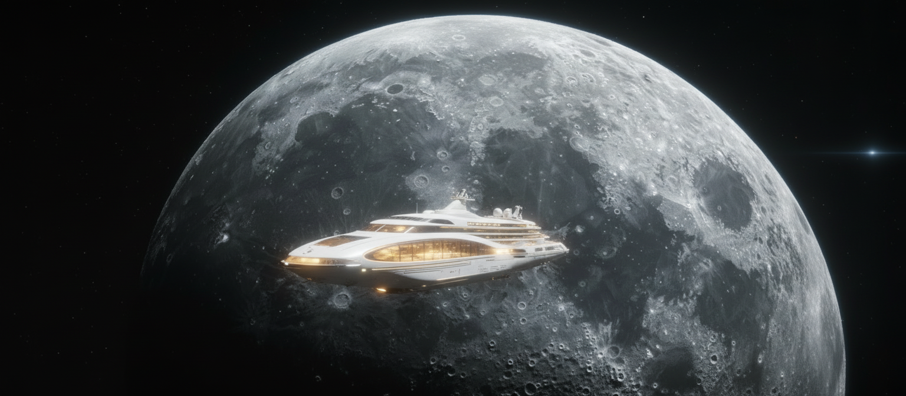

Exosphere Lift is not a trip to a destination — it's a journey beyond the planet itself.
Rising through the exosphere, travelers leave Earth behind and witness it as a whole: silent, luminous, and fragile against the darkness of space. Auroras ripple below, stars burn steady above, and gravity gently fades away.
Designed for comfort and guided by experts, every stage of the experience is explained, turning awe into understanding. This is not about speed or thrill, but about perspective.
Exosphere Lift isn't luxury because it's expensive.
It's luxury because it's rare.
A journey that doesn't just change where you've been —
it changes how you see the world.


Orbital Cruise represents a new era of ultra-premium tourism—a journey not bound by Earth's surface but by the silent pathways of space itself. Gliding gracefully across low orbit, passengers witness Earth as few ever have: continents drifting below, auroras dancing, and the fragile beauty of our planet suspended in darkness.
The vessel itself is a masterpiece of sleek engineering and refined comfort. Panoramic observation decks frame the cosmos while advanced propulsion hums softly, creating a serene, meditative atmosphere. Every moment is curated to feel timeless—detached from gravity and everyday concerns.
For those who seek more than destinations, perspective itself becomes the journey. Orbital Cruise offers an experience unlike any other—not merely a trip, but a statement about the future of exploration and the new era of experiential luxury.
Lunar Arrival: Your Journey Beyond Earth
For centuries, the Moon has inspired wonder from afar. Now, it's a destination. Travel through space aboard a state-of-the-art spacecraft, where panoramic windows reveal the stars, and gravity loosens its grip.
Landing on the Moon is unlike any other experience. Explore craters, glide across ancient plains, and feel the thrill of low gravity with every step. Silence reigns, interrupted only by your own movements—and the Earth rising above the horizon, a fragile blue jewel in the blackness of space.
This is more than travel. It's perspective, adventure, and a chance to witness our world—and the universe—like never before.
The Moon is no longer just a dream. It's a destination.
